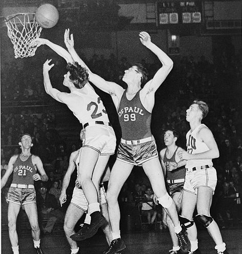

El básquet, también conocido como baloncesto, basquetbol o basketball en inglés, es un deporte de
equipo creado en el año 1891 por el profesor y capellán James Naismith, en la ciudad de Springfield
(Massachussetts) en los Estados Unidos. James Naismith, era profesor de educación física en una escuela
para jóvenes cristianos llamada YMCA (Young Mens Christian Association), y se había propuesto crear un
deporte que pudiese ser practicado bajo techo para, así, mantener activos a sus alumnos durante los duros
inviernos de la ciudad de Springfield, que impedían la práctica de actividades físicas al aire libre.
Origen del Básquet
En enero de 1891, época en el que James Naismith ideaba este nuevo deporte, las escuelas alrededor
de los Estados Unidos impartían prácticas deportivas que se tornaban repetitivas y un tanto aburridas para los jóvenes.
Naismith, entonces, diseñó un juego basado en el manejo de una pelota cuyo objetivo era meterla
en una cesta. De hecho, el nombre del juego proviene de estos primeros ensayos, puesto que, en español, basket se
traduce como canasta o cesta y ball como pelota o balón, juntos formarían la expresión “balón en cesta” o baloncesto.
En la dinámica del juego, dio prioridad a la destreza física más que al contacto entre los jugadores, pues el juego
debía estar adecuado para desarrollarse dentro de un gimnasio.
¿Cómo fueron los primeros partidos de básquet?
James Naismith propuso que una pelota cayera dentro de una caja que debía medir unos 45 centímetros cuadrados;
sin embargo, las cajas no fueron conseguidas y debieron reemplazarse por cestas de frutas,
sirviendo como depositarias de la pelota.
Las cestas, fueron colgadas a una altura accesible a los jugadores, para que el balón pudiera ser recogido
fácilmente después de ser encestado. Cuando esto ocurría, el partido debía pararse por un momento hasta
recoger de nuevo la pelota.
Balón de básquet original
En 1821 el balón oficial del básquet aún no había sido creado, por lo que, el primer partido realizado
en el gimnasio de la YMCA, el 20 de enero de 1892, se jugó con un balón de fútbol.
Más tarde, con la creciente popularidad del deporte, se fabricó un balón específico para el juego,
siendo diseñado con paneles de cuero uniforme.
En el año 1942, se creó la versión moldeada de esta primera pelota y, durante algunos años más,
se usó una pelota hecha de cuero. En el año 1990 se comenzaron a usar materiales sintéticos para
la fabricación de los balones de básquet.
Primer tablero de básquet

El tablero de básquet originalmente fue agregado para evitar entorpecer la entrada al balón al encestar.
Este nuevo accesorio en la canasta, dio origen a la jugada rebote, que consiste en poseer el balón luego de
que el lanzamiento dado por el equipo contrario ha fallado.
Hoy día, el rebote se considera como una de las jugadas más fundamentales de los partidos de básquet.
Número de jugadores
Naismith, tenía una clase con 18 alumnos, por ello decidió que los equipos estuviesen formados por 9 jugadores
cada uno, más tarde, el número total se redujo a 7. En 1896, se revisó de nuevo la distribución del equipo,
reduciéndose el número de jugadores a 5.
Reglas originales del básquet
James Naismith, tuvo como premisa principal que este juego no fuese violento. Para ello, limitó el contacto
físico entre los jugadores, Naismith, a su vez, ideó trece reglas que explicaban claramente lo que los
jugadores podían o no hacer.
Las reglas principales consistían en poder lanzar el balón con ambas manos, se prohibía dar empujones,
zancadillas y golpes al oponente, el jugador que cometiese dichas faltas, era sometido a infracción o
expulsión del partido.
El árbitro principal, vigilaba a los jugadores para evitar faltas de motivo físico y, en caso de que el
partido quedase empatado, el tiempo de prórroga que debía jugarse lo decidían los capitanes de equipo.
Las 13 reglas originales del básquet
El profesor de educación física, James Naismith, inventó el basquetbol a finales del siglo XIX y
escribió las 13 reglas originales de este deporte. Estas aparecieron publicadas en el periódico
"El Triángulo" del Springfield College, el 15 de enero de 1892, y eran:
1. La pelota puede ser lanzada en cualquier dirección con una o con las dos manos.
2. La pelota se puede palmear en cualquier dirección con una o ambas manos, pero nunca se golpeará con el puño.
3. Un jugador no puede correr con el balón. El jugador debe lanzarlo desde el lugar en que lo atrapa,
pero si viene en carrera, se le permitirán pasos si trata de detenerse.
4. La pelota debe sostenerse en una mano, o entre las manos; los brazos o el cuerpo no deben usarse para sostenerla.
5. No se permitirá cargar con el hombro, sujetar, empujar o hacer tropezar a los oponentes. La primera infracción
de esta regla por un jugador contará como falta. La segunda lo descalificará hasta que se haga la próxima cesta.
Si hubo intención evidente de lesionar al contrincante no se permitirán sustituciones durante el resto del juego.
6. Una falta es golpear la pelota con el puño. La violación de las Reglas 3 y 4, además de lo descrito en la regla 5.
7. Si cualquier equipo comete tres faltas consecutivas, se contará una cesta para su oponente. (Por consecutivas,
se entiende que el contrincante no haya cometido faltas en ese tiempo).
8. Se convierte la cesta o punto cuando la pelota es lanzada desde el suelo hacia la canasta, esta entra y
permanece allí, siempre que los defensores no toquen el balón o dificulten la canasta. Si el balón reposa en
los bordes de la cesta, y el adversario la mueve, se contará como punto.
9. Cuando el balón salga de la cancha, se lanzará al campo de juego por el primero que lo toque.
De haber dudas, el árbitro lo arrojará directamente al campo. El que saque tendrá cinco segundos. Si lo retiene
por más tiempo, el balón se dará al oponente. Si algún equipo persiste en retrasar el juego, el árbitro señalará una falta.
10. El árbitro será juez para los jugadores, anotará las faltas y notificará al árbitro principal cuando se hayan
cometido tres faltas consecutivas. Además, podrá descalificar a los jugadores de acuerdo con la Regla 5.
11. El árbitro también vigilará la pelota y decidirá cuándo está en juego, dentro de los límites, qué equipo
tiene posesión y controlará el tiempo. Él decidirá cuándo se ha anotado una cesta y llevará la cuenta de éstas,
llevando a cabo cualquier otra función propia de un árbitro.
12. Habrá dos tiempos de 15 minutos en el partido, con cinco minutos de descanso entre ellos.
13. El equipo que anote más puntos en ese tiempo será declarado ganador. En caso de empate, los capitanes
pueden acordar continuar el juego hasta que se marque otra cesta.
Por supuesto, tales reglas no se mantienen en la actualidad. El basquetbol ha evolucionado mucho desde sus inicios.
Sus reglamentos son revisados constantemente con el fin de mejorar el deporte y el desempeño de los jugadores.